Home Depot
During a case competition for Home Depot, I designed an immerse online showroom and a revamped DIY project page as components of an overarching marketing campaign.

| Dates | Jul - Aug 2021 |
|---|---|
| Role | Strategy and Implementation |
| Team | 2 people |
| Skills | App/Web Design, UX Research, Illustrator, Product Management |
UX Problem
Millennials/Gen Z are excited to do DIY projects, but it's a hassle to find/get the resources to start the project.
Summary
Home Depot wanted a digital growth strategy to help capture the Millennial and Gen Z audiences and capitalize on DIY (Do-it-yourself) momentum during the COVID-19 pandemic. My partner and I decided we wanted to Home Depot to focus on "Projects, not Products": i.e. revamp their app/overall online presence to encourage easy access to project/DIY ideas and converting their in-store locations into showrooms to achieve a similar goal. We created an app design and a website to fully showcase our ideas.
Context
For a Home Depot Case Competition, Home Depot wanted to know how they can best appeal to Millennials and Gen Z by trying to replicate the Home Depot in-store experience online. After conducting primary research, we believed that having Home Depot emphasize "Projects, not Products" would help consumers easily find materials easy to do their DIY projects.
Role
Since there were only two of us, many of our roles overlapped a lot. However, my main focuses were strategy, project management and implementation. After we both spent a lot of time developing our core marketing strategy, I focused on the project-management side of the competition (since we had a very limited timeline) and the implementation, which included mockups and feature documentation.
Research: Interviews
In order to truly understand the consumer's perspective on Home Depot and DIY projects, we conducted user interviews with Gen Z students from across the U.S. Since we were on a short deadline, many of the responders were people we knew/that were willing to do a short interview. Some of the questions we asked included:
- What kinds of products have you bought from Home Depot? What do you use these products for?
- Walk me through your typical Home Depot experience, whether that be online or in store.
- What's stopping you from starting a DIY project (that you want to do) right now?
Overall, we conducted roughly 15-30 minute interviews with 37 participants. For Gen Z, many of them were turning to Home Depot for the location convenience, but had poor in-store experiences due to overwhelming nature of a warehouse-style layout. Home Depot benefited from its brand recognition, but was difficult to navigate, especially for people looking for a lot of different DIY materials.
Customer Profiles
After conducting some secondary research, we used all of our research and some of the case materials to create 3 rough customer profiles:
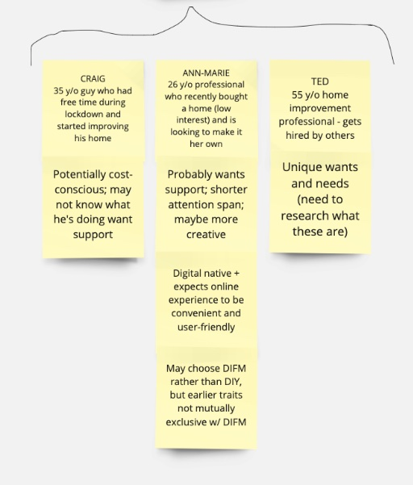
The final customer profiles looked like this:
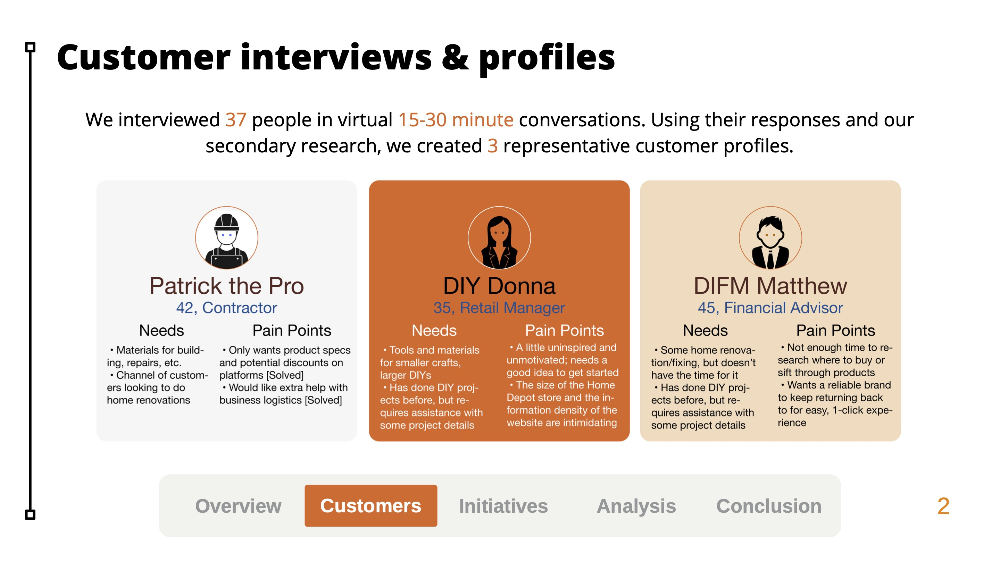
Some of the key pain points we identified within the different consumer groups were:
- Users feel uninspired and unmotivated to start DIY projects; looking for a good idea
- User are confused/intimidated by the current layout/format of Home Depot
- Users do not have enough time to gather products online/in-store
Analyzing our markets, we realized that many of "Patrick the Pro's" problems had been solved by Home Depot or were currently being mitigated by Home Depot (ex. Home Depot offers a website that has very specific deals on products for pros/contractors). Thus, our main focuses were on "DIY Donna" and "DIFM Matthew".
Design Process
For this competition, Home Depot wanted us to capitalize on DIY-project growth by revamping their digital/web presence. We believed that the most effective way to do this was to re-design their website and app to be more "Gen Z"-friendly. Since this was a case competition, we didn't have the flexibility for multiple iterations. Regardless, I still aimed to create a comprehensive and clean new interface in the first design.
Brainstorming
Since my partner and I were in different states at the time, the whole process was conducted over zoom. For brainstorming, we thought that Miro, a virtual whiteboard, would be a good platform to organize our thoughts.
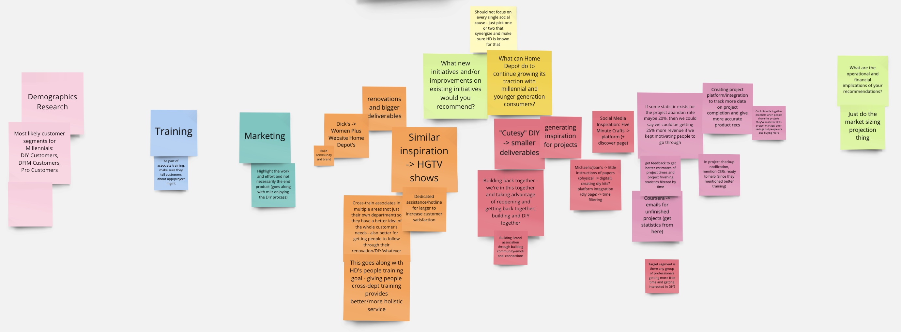 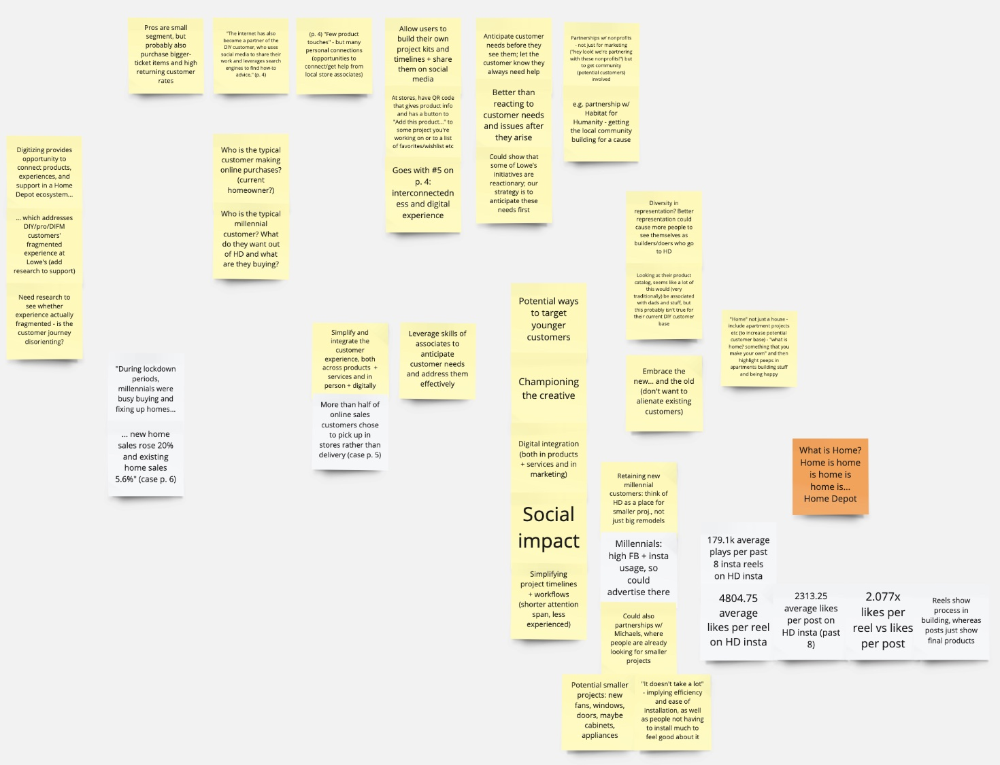
Each color represents a possible solution/path for Home Depot to revamp their digital presence. After looking over all the ideas, we believed that ideas revolving around inspiration and ease-of-use (in finding DIY materials and projects) would be the most aligned with our consumer profiles (see DIY Donna and DIFM Matthew). The only exception is the second/lower part of the Miro Brainstorm, which was a blend of ideas, opinions, logistics, etc.
Current Platform Analysis
After interviewing current consumers, we realized there's a strong intimidation factor associated with Home Depot; people think of walls lined with 2x4s, rows and rows of warehouse shelves, confusing tools and products, etc. This was also consistent with the current website and app design:
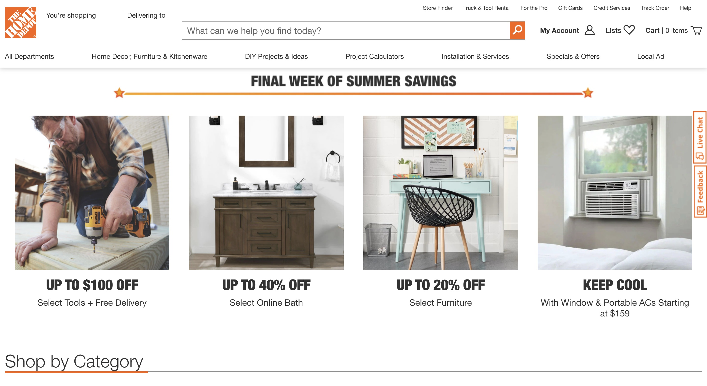 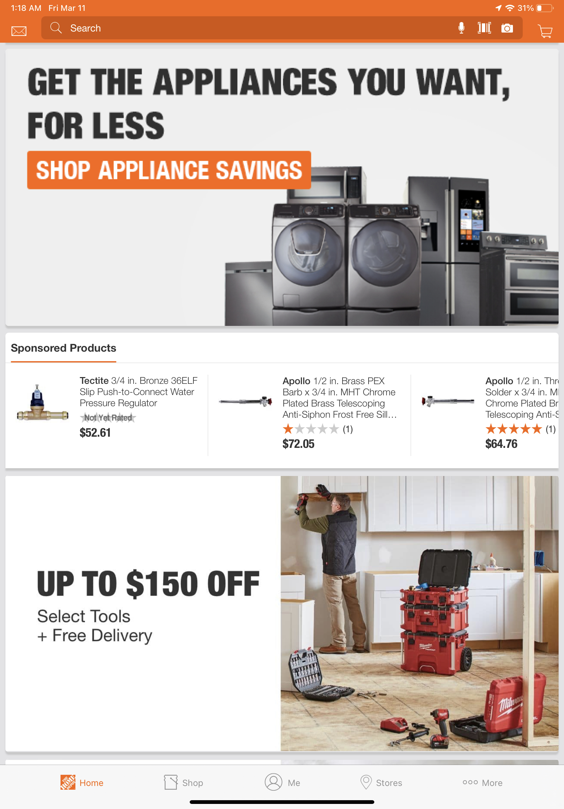
Looking at the home page, the current design is heavily targeted at "Pat the Pro", or contractors who are looking for a lot of different materials at the cheapest prices. It doesn't, however, lend itself well to Millennials/Gen Z who are looking for inspiration.
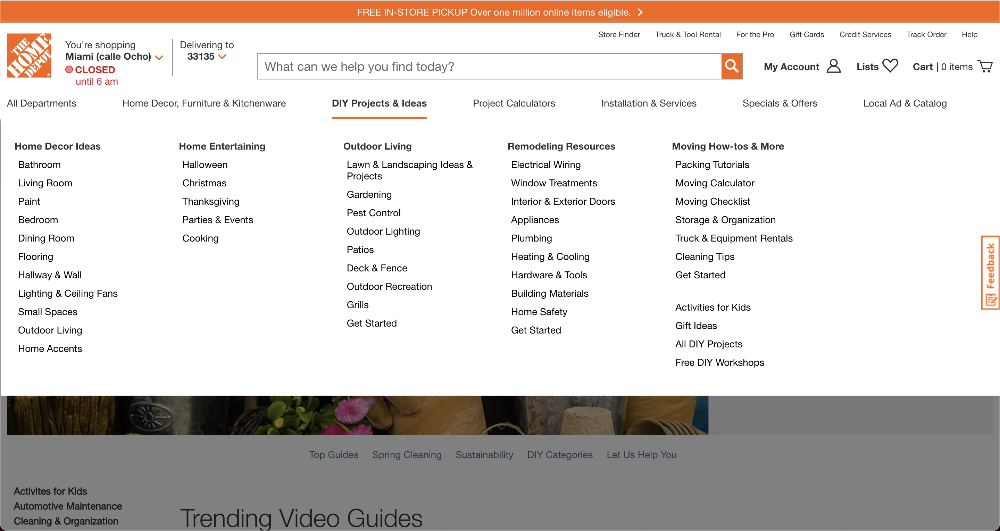 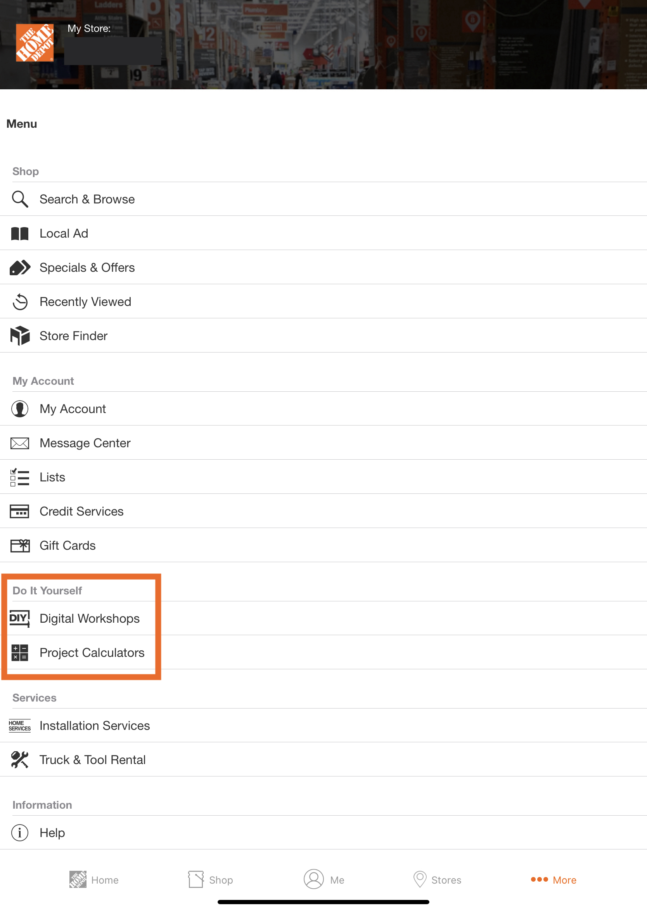
While they do have a DIY project section, the poor layout and organization makes it very overwhelming to find a particular project or get inspiration; instead, the user is bombarded with so many different categories and topics, which makes it difficult to focus on the content. The app doesn't even have a mobile DIY-project interface; it simply links to the online website.
Branding
In order to create an attractive platform for Gen Z to use, we need to analyze the current Home Depot platform and understand their current brand identity. I began by creating a mood board of my personal associations with Home Depot as a reference point for both the slide deck and the core idea/proposal itself.
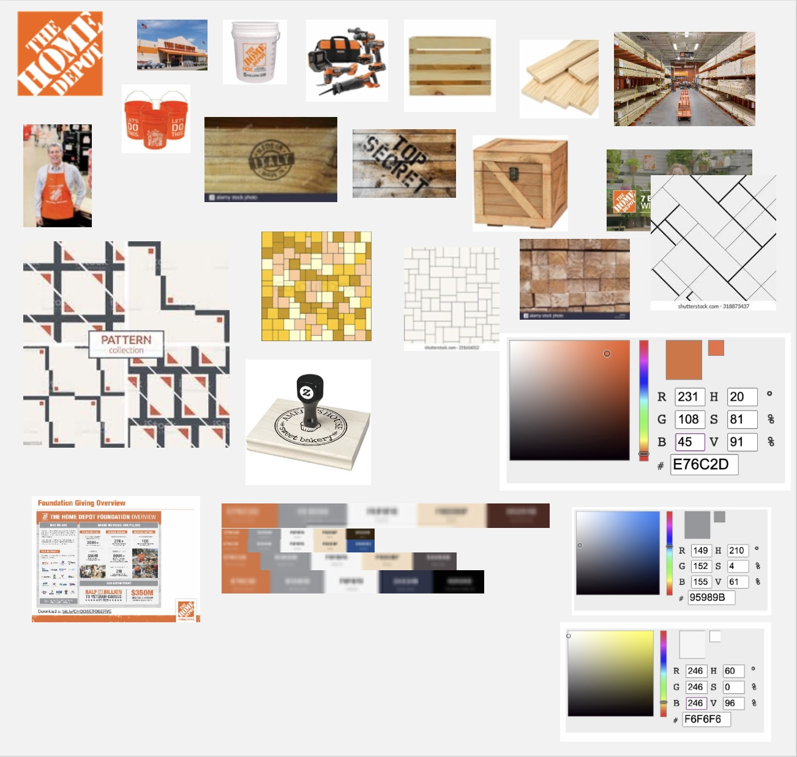
To remedy this, I intended to redesign the app and website with a few things in mind:
- Projects, not Products - our overall vision for Home Depot's rebranding centered around the concept of "Projects, not Products". We wanted everything (retail displays, the app, the website, etc.) to be more conducive to DIY-ing by allowing consumers to see products within larger projects (ex. Lumber vs part of a new table). This meant offering things like bundle deals, which users could quickly identify and purchase project components. We believed the whole consumer experience would be more pleasant because users spend less time finding and more time DIY-ing.
- Inspiring - when Gen Z consumers were asked about current DIY projects they're working on, many said that they were not working on anything because of "perceived lack of time" or motivation. In order to get consumers excited about DIY, we want to change Home Depot's online (and in-person) presence into a place for discovery of new ideas. Showing users DIY-projects in the context of a furnished room gets them excited to DIY by showing them the potential of Home Depot's DIY offerings.
- Clean - the current website mimics the current in-person experience: overwhelming due to the sheer number of options and paths. Thus, it was imperative that the new design reduces the content down into a clean layout that's easy to understand and pleasant to look at.
Hi-Fi Mockups
360° Website Showroom Mockup (Adobe Illustrator)
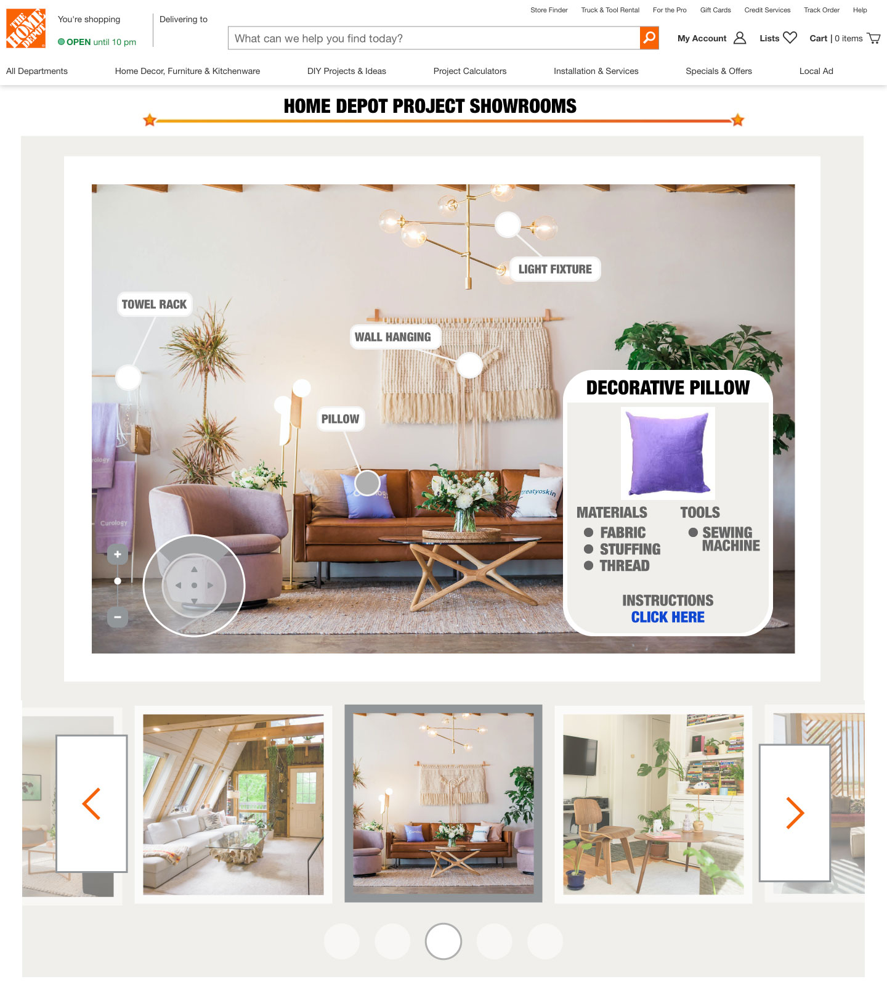
This website mockup was designed to cater to Gen Z by gathering inspirational designs and showrooms into a central carousel (i.e. the slideshow-like element that cycles through photos). The carousel allows users to look at different designs and see applications of Home Depot DIY projects. There are small tooltips/text bubbles that denote DIY projects and can be clicked on for more details. The controls on the bottom right offer 360° control, creating an immersive experience.
Overall, this website design has a very clear and central focus, which is more friendly towards Gen Z/new users. The showroom concept also creates motivation through inspiration: users can see the potential impact of Home Depot's DIY projects and the pictures will garner excitement towards DIY-ing and the Home Depot brand.
The design also allows for implementation flexibility; Home Depot can use the home page as a way to redirect and separate consumer segments. Thus, they can still create the newspaper-ad/warehouse vibe targeted at contractors looking for sales while inspiring new Gen Z consumers on a separate showroom page.
App Mockup (Adobe Illustrator)
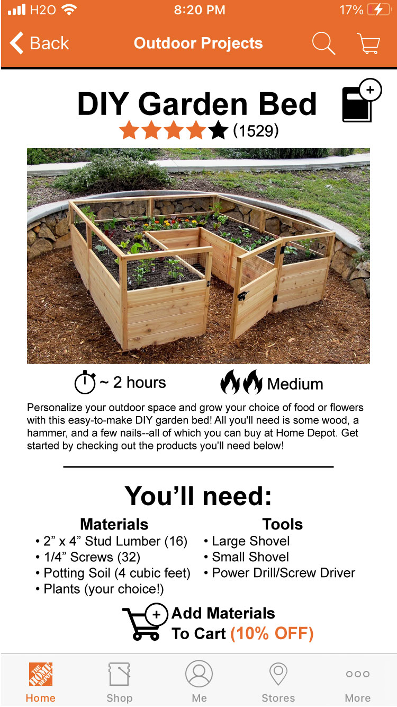 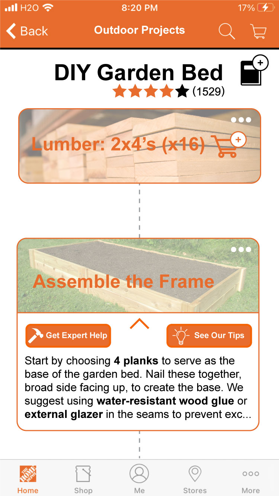
The new Home Depot project page provides Gen Z consumers with the mobile support for DIY projects. The project has all of the important information on the first page (time, difficulty, description, rating) so users can get a quick summary of the project as a whole. The page also includes the individual materials required and options to add all of the project materials to the cart at a discount. The project page itself has seamless integration for purchasing specific items, getting step-specific tips, or expert help for bigger issues. The project itself can also be added to the user's project page, which allows users to manage DIY projects and track individual project statuses.
Creating in-app project integration gives a smoother user experience for Gen Z consumers looking to start a DIY project. This also creates a key opportunity for product integration and makes it super easy to purchase all of the project materials (or find them in-store with potential QR Code/location-specific directions). The star system, coupled with the tip and expert help buttons, help mitigate perceived project difficulty and makes help and support more accessible. Home Depot's warehouse-style stores may feel cold and daunting, but the community of both DIY experts and novices alike create a comfortable space for new customers to get into DIY and the Home Depot brand.
Skill Highlight: Project Management (Notion)
Being a case competition with rather short timeline meant that my partner and I needed to work efficiently. Moreover, we had to strike a balance between the competition itself and our various summer commitments. Thus, I took on a project management role to make sure we could finish our deliverables on time and manage all the aspects of our business pitch and slide deck between two people.
I chose Notion for this project because of my familiarity with the platform and its beautifully simple design. Notion itself has project management templates that help track tasks and link content from different Notion pages.
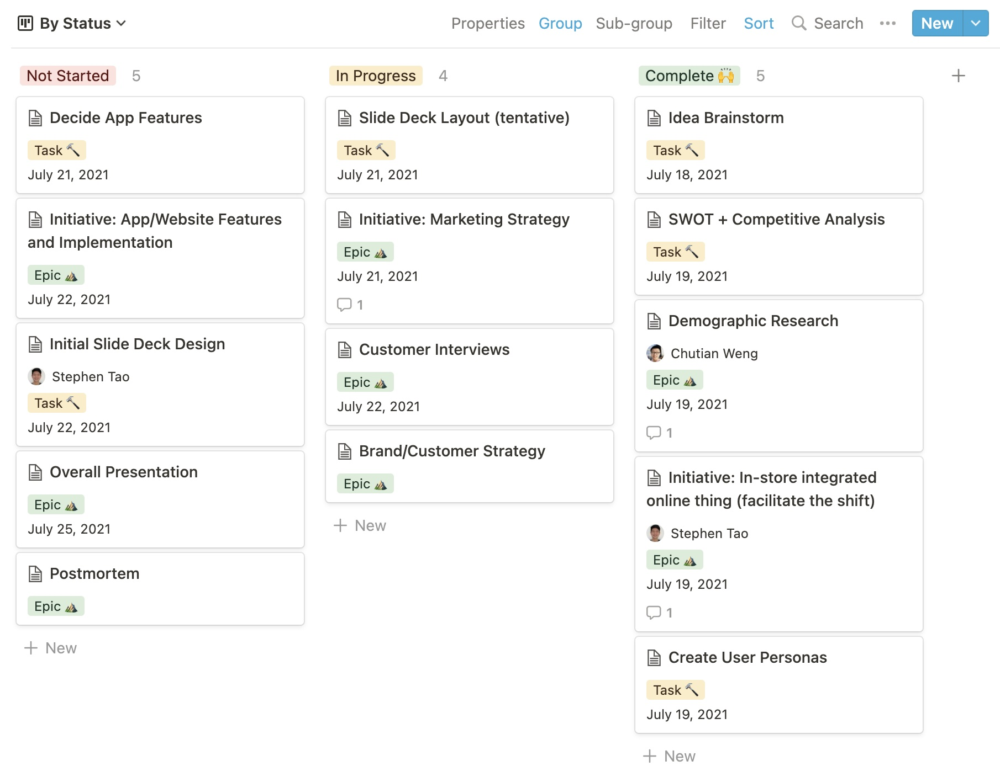
The board itself is divide into 3 sections (based on progress): Not Started, In Progress, and Completed. To keep the content self-contained, each task tile linked to a Notion page with its relevant content.
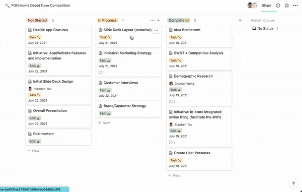
Overall, Notion was super useful for keeping track of the various aspects of the competition, since the two of us were responsible for marketing, finance, etc. There was definitely more potential to manage the information a little better (since it was our first time using Notion for project management), but was super helpful once we got the hang of it.
Outcomes
The final deliverable for the competition was a slide deck that included our mockups along with our overall marketing strategy, data collection, finances, etc.
Reflection
The Home Depot Case Competition was an exciting opportunity to analyze the current platform design and re-target it towards another audience. The case offered a chance to apply design skills in a business context and proved the versatility of the design process as a whole. This was a very exploratory project; I "prototyped" on Adobe Illustrator, brainstormed and created a mood board on Miro, and put a strong focus on consumer profiles and their relationship with these interfaces. Overall, I was very happy with the web platform I designed and the proposal/concept my partner and I developed.
If I had more time, I would spend it developing the mobile platform. Since this wasn't technically a design competition, we didn't put a lot of emphasis on the prototypes and mockups. While the project page itself was the most important, the user's project page/profile, the rating system, and other features had lots of design potential for expanding and creating a unified app design. The website itself needed an interface for two very distinct groups (old contractors and new customers/Gen Z), which would've been interesting to design. Given the time constraints, however, our overall deck and prototypes effectively conveyed our central strategy and offered many potential avenues for exploration.